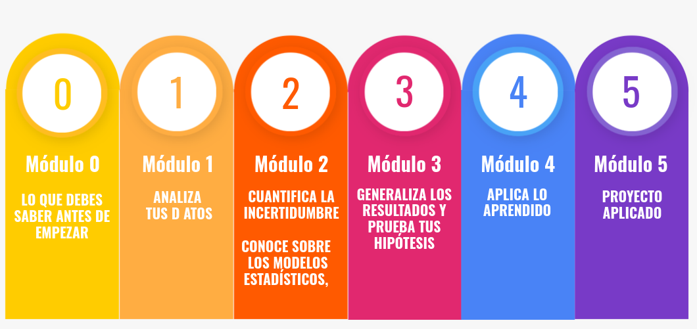
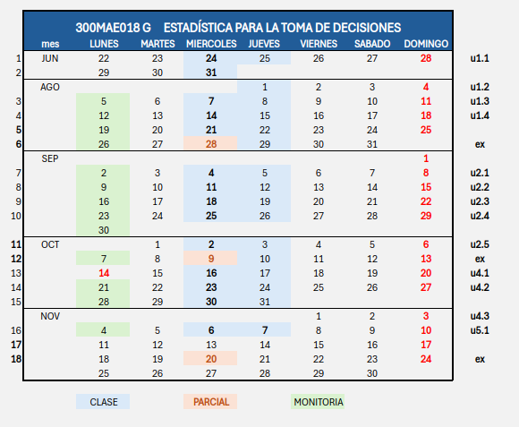
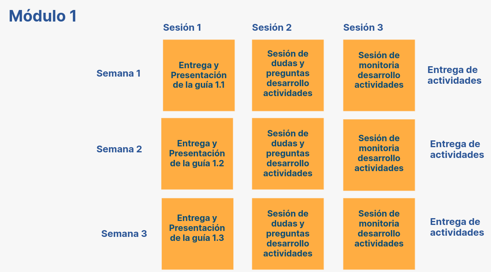
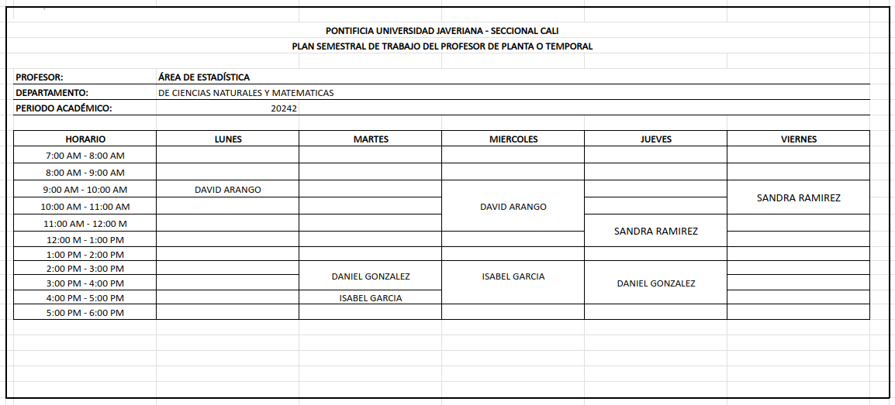

| Curso | Grupo | Horario | LUNES | MIERCOLES | JUEVES | ||
|---|---|---|---|---|---|---|---|
| 30MAE018 | G | 11:00 a 13:00 | PL 4.7 | LG 1.0 | AL 1.2 | ||
| Monitoría | Sesión 1 | Sesión 2 |

| Curso | Grupo | Horario | LUNES | MIERCOLES | VIERNES | ||
|---|---|---|---|---|---|---|---|
| 30MAE018 | A | 11:00 a 13:00 | PL 4.7 | LG 1.0 | AL 2.2 | ||
| Monitoría | Sesión 1 | Sesión 2 |

DIURNOS
NOCTURNOS (solo carreras nocturnas)
Código : 30MAE018
Departamento que la ofrece : Ciencias Naturales y Matemáticas
Área de conocimiento. Estadística -Matemáticas y Ciencias
Naturales
Nucleo básico de conocimiento : Estadística
Créditos : 3
Número total de horas : 144
Horas de clase semanales : 4
Horas de trabajo independiente : 5 (2 con monitor, 3 estudiante solo)
Prerrequisitos : Teoría de Probabilidad (300MAE013)
Correquisitos : ninguno
Asignaturas equivalentes : ninguna
Modalidad : Presencial
Idioma en que se imparte : Español
Existe un llamado frecuente de múltiples estamentos nacionales e internacionales hacia la consolidación de bases de datos que permitan el análisis de indicadores cuantitativos que evidencien el estado, las tendencias y la proyección de los aspectos prioritarios en el desarrollo de las regiones.
La constante en todos estos casos, es el apoyo que han brindado los métodos estadísticos en la valoración, análisis y seguimiento de los indicadores de desarrollo desde cada panorama para los nuevos desarrollos y la prosperidad de muchas regiones e instituciones.
En el curso Estadística para la toma de decisiones se propone aportar a los estudiantes las herramientas teóricas y prácticas del análisis cuantitativo de datos con el fin de fortalecer habilidades y destrezas en la recolección, procesamiento, interpretación y comunicación de resultados ligados al análisis de datos en situaciones del diario vivir o del desarrollo profesional en el campo de las ciencias económicas y administrativas.
| Competencias | Indicadores |
|---|---|
| Comunicativa: Leer, interpretar y expresar, conceptos básicos de la estadística en situaciones y contextos diversos. | Com: Transmite con leguaje estadístico las ideas, análisis e interpretaciones situaciones planteadas. |
| Resolución de problemas: Conocer, aplicar y calcular técnicas estadísticas, indicadores y probabilidades en situaciones y contextos diversos | Res1. Identifica y aplica indicadores, técnicas estadísticas de procesamiento de datos y modelos probabilísticos necesarios para comprender el problema de interés. |
| Res2. Comprende la información estadística disponible en tablas, bases de datos, resultados de procesamientos, publicaciones, indicadores descriptivos y probabilísticos. | |
| Res3. Resuelve el problema usando indicadores, técnicas estadísticas de procesamiento de datos y modelos probabilísticos. | |
| Computacional: Aplicar métodos estadísticos a través del lenguaje de programación R y herramientas de visualización para la solución de problemas que faciliten el aprendizaje de conceptos a través de simulaciones en el contexto de estadística y probabilidad para alcanzar las soluciones propuestas. Esta competencia se centra en el uso de R y herramientas de visualización para abordar problemas estadísticos, permitiendo a los estudiantes no solo aprender conceptos teóricos, sino también aplicar estos conocimientos en situaciones prácticas mediante simulaciones y análisis de datos. | Com. Aplicar métodos estadísticos a través del lenguaje de programación R y herramientas de visualización para la solución a problemas que faciliten el aprendizaje de conceptos a través de simulaciones en el contexto de estadística y probabilidad para alcanzar de las soluciones propuestas. |
Comprender conceptos estadísticos para aplicarlos en situaciones de interés, mediante las lecturas, talleres, interacción en clase y la búsqueda bibliográfica.
Procesar información estadística para analizar una situación de interés en un contexto determinado, mediante la elaboración de talleres, laboratorios, interacción en clase y un proyecto aplicado.
Interpretar información estadística proveniente de diferentes fuentes, para el análisis y soporte en la toma de decisiones, mediante lecturas, talleres, laboratorios y trabajos en grupo.
Comunicar con lenguaje estadístico, las interpretaciones y exposiciones de sus análisis alrededor de diferentes situaciones de interés, mediante la interacción en clase, informes escritos y presentaciones orales.
Las siguientes son las competencias que priorizan el seguimiento al aprendizaje de los estudiantes:
Reconoce los elementos primordiales de la metodología estadística.
Se apoya de medios tecnológicos y software para procesar datos estadísticos.
Interpreta en contextos específicos los indicadores de centramiento, dispersión, posición y correlación más frecuentes.
Identifica las condiciones de un experimento y define en él variables aleatorias y sus propiedades para usarlas en el cálculo de probabilidades de eventos asociados.
Diferenciar un estimador de un parámetro y lo usa al abordar una inferencia.
Comprende y usa la estimación, el procedimiento de hipótesis estadística y la estimación por mínimos cuadrados en el modelo de regresión lineal en situaciones de interés.
Interpretar los resultados en la estimación de la media y la proporción en situaciones con una población involucrada.
El curso se desarrolla en modalidad presencial, con dos encuentros los dias miercoles y viernes y un encuentro con el acompañamiento de un monitor los dias lunes, que guiará el desarrollo de un taller diseñado para fortalecer la comprensión y habilidad resolutiva de los estudiantes.
Cada semana se presentará una unidad que será trabajada durantes las sesiones con talleres, simulaciones, laboratorios computacionales, lecturas y ejercicios análisis de situaciones y aplicaciones directas en el contexto de las ciencias económicas y administrativas.
También se contemplan espacios para el acompañamiento fuera de clase y bajo la tutoría de diferentes profesores
La plataforma Bs será el principal canal de comunicación para el desarrollo del curso.
Se planea un proyecto de aplicación para desarrollar en por fases donde los estudiantes enfrentan situaciones críticas con la teoría o los métodos estadísticos.
| Actividades porcentajes | Número de actividades | porcentaje por actividad | Porcentaje Total por actividad |
|---|---|---|---|
| Exámenes | 3 | 20 | 60 |
| Actividades | 5 | 4 | 20 |
| Trabajo aplicado | 1 | 20 | 20 |
Anderson, D. Sweeney, D. Williams, T. (2016) Estadística para administración y economía. Décima segunda edición. México, Internacional Thomson Editores. Biblioteca General Colección Abierta Semisótano 519.5 E792e
Levine, D. Krehbiel, T. Berenson, M. (2014) Estadística para Administración. Sexta edición. Editorial Pearson
Lind D, Marchal, W. Wathen S. (2008). Estadística aplicada a los negocios y a la economía. Decimotercera edición. Mc Graw Hill
Newbold, P. Carlson, W. y Thorne, B. (2013). Estadística para administración y economía. Sexta edición. Pearson Prentice Hall.
Webster, A. (2000) Estadística aplicada a los negocios y a la economía. Tercera edición. Mc Graw Hill
Recursos de Apoyo